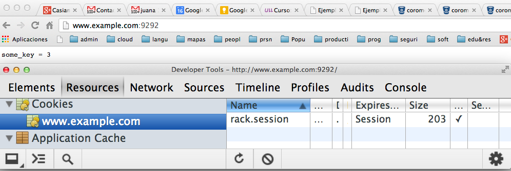

Gestión de Sesiones
- Hypertext Transfer Protocol (HTTP) is stateless: a client computer
running a web browser must establish a new Transmission Control
Protocol (TCP) network connection to the web server with each new
HTTP GET or POST request.
- The web server, therefore, cannot rely
on an established TCP network connection for longer than a single
HTTP GET or POST operation.
- Session management is the technique
used by the web developer to make the stateless HTTP protocol support
session state.
- For example, once a user has been authenticated to
the web server, the user's next HTTP request (GET or POST) should
not cause the web server to ask for the user's account and password
again.
- The session information is stored on the web server using the
session identifier
generated as a result of the first (sometimes
the first authenticated) request from the end user running a web
browser.
- The "storage" of Session IDs and the associated session
data (user name, account number, etc.) on the web server is
accomplished using a variety of techniques including, but not limited
to, local memory, flat files, and databases.
- A session token
is a unique identifier that is generated and sent
from a server to a client to identify the current interaction
session.
- The client usually stores and sends the token as an HTTP
cookie and/or sends it as a parameter in GET or POST queries. The
reason to use session tokens is that the client only has to handle
the identifier—all session data is stored on the server (usually
in a database, to which the client does not have direct access)
linked to that identifier.
- Allowing users to log into a website is a frequent use of
cookies.
- A web server typically sends a cookie containing a unique
session identifier.
- The web browser will send back that session identifier
with each subsequent request and
related items are stored
associated with this unique session identifier.
- Typically the web server will first send a cookie
containing a unique session identifier. Users then submit their
credentials and the web application authenticates the session
and allows the user access to services.
- Applications today usually store the gathered information
in a database on the server side, rather than storing them
in cookies
Rack::Session::Cookie proporciona un sencillo sistema para gestionar
sesiones basado en cookies.
- La
session es un cookie que contiene un
hash almacenado mediante marshalling codificado en base64.
- Por defecto el nombre del cookie es
rack.session pero puede ser
modificado mediante el atributo :key.
- Dándole un valor a
secret_key se garantiza que es comprobada
la integridad de los datos de la cookie
- Para acceder dentro de nuestro programa
a la sesión accedemos al hash
env["rack.session"] o bien
env["key-value"] si hemos especificado el atributo
:key
Sigue un ejemplo:
[~/local/src/ruby/sinatra/rack/rack-session-cookie(master)]$ cat configapp.ru
require 'pp'
require './myapp'
use Rack::Session::Cookie,
:key => 'rack.session',
:domain => 'example.com',
:secret => 'some_secret'
run MyApp.new
[~/local/src/ruby/sinatra/rack/rack-session-cookie(master)]$ cat myapp.rb
class MyApp
def set_env(env)
@env = env
@session = env['rack.session']
end
def some_key
return @session['some_key'].to_i if @session['some_key']
@session['some_key'] = 0
end
def some_key=(value)
@session['some_key'] = value
end
def call(env)
set_env(env)
res = Rack::Response.new
req = Rack::Request.new env
self.some_key = self.some_key + 1 if req.path == '/'
res.write("some_key = #{@session['some_key']}\n")
res.finish
end
end
Hagamos la prueba conectándonos a www.example.com. Para ello
edtiamos /etc/hosts para que localhost apunte a
www.example.com:
[~/local/src/ruby/sinatra/rack/rack-session-cookie(master)]$ cat /etc/hosts
##
# Host Database
#
# localhost is used to configure the loopback interface
# when the system is booting. Do not change this entry.
##
127.0.0.1 localhost www.example.com
...
Arrancamos el servidor:
[~/local/src/ruby/sinatra/rack/rack-session-cookie(master)]$ rackup configapp.ru
>> Thin web server (v1.5.1 codename Straight Razor)
>> Maximum connections set to 1024
>> Listening on 0.0.0.0:9292, CTRL+C to stop
Y visitamos www.example.com con nuestro navegador:

Subsecciones
Casiano Rodriguez León
2014-11-17